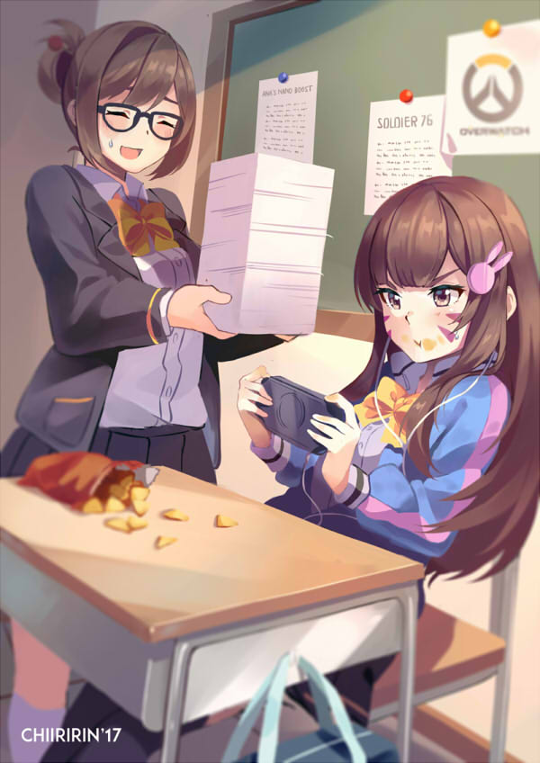

In this blog entry, I'll be teaching you how to get better in Overwatch.

What to Do
So in order to rank up in Overwatch, there's a lot of things you need to learn. A. lot. Of. Things. You will need to know how to:
Not tilt
Use your ultimate appropiately
Position yourself
Communicate
Trust your team
Playing different hero roles
You will need also need knowledge of:
How the ranking system works
Win and loss streaks
Hidden MMR
What hero to pick
What hero ultimates do
Damage numbers and TTK
I can't wait to get into the fight!
So there's a lot of stuff to know and many players don't want to read on how to play Overwatch, when they could be actually playing Overwatch. But without knowing what to do to improve and how to actually get better, you won't be able to climb in rank. There are players that can climb their way to a fairly high rating by just having very good aim and 1v6ing the enemy team, but Overwatch is a team game and trying to hard carry every game stops working at a point.
So because there are so many things to learn and there are better people to learn from than me. I have created a playlist of youtube videos that I watched to become a better player. I've put them in an order that I think they should be watched in. The videos at the beginning of the list teach background knowledge of the game. Next some videos about how to practice aiming and warming up, and then hero specific guides for the heroes I think are good to climb with. The videos at the end are more intermediate knowledge and I think aren't needed until higher levels of play. Now on this page, I'll be writing about stuff that I didn't find in the videos I watched.
Math in Overwatch
Here are some damage numbers.
Hero
Damage
Ammo
Rate of Fire
McCree
20 - 70
6
2
Soldier: 76
6 - 20
25
8.8
D.va
0.9 - 2 * 11 pellets
∞
6.67
Tracer
1.5 - 6
40
40
Ana
80
10
1.25
Headshots are a 2x damage multiplier, with the exception of Widowmaker who has a multiplier of 2.5x.
I took these numbers from overwatch.gamepedia.com, a very good resource. You can look up the numbers for the heroes you like afterwards.
So let's do some math. McCree does 70 damage per bodyshot and 140 damage per headshot at his most effective range. So in order to kill a 200 HP hero (Soldier, Ana, etc.) you need to land 3 bodyshots or 1 headshot and 1 bodyshot. McCree shoots 2 shots per second, so assuming you are at optimal range and land the headshot and bodyshot, the Time to Kill (TTK) for a 200 HP hero is minimum 1 second as McCree, with 3 bodyshots the TTK is 1.5 seconds. You don't need to know the TTK for every hero as that is a lot of information. But it's good info to have for the heroes that you play the most. For example you are playing McCree and want to kill an enemy Ana you know that you need to land 3 bodyshots maximum to kill her(provided she doesn't nade herself).
So from the example you can calculate the TTK for the heroes you play the most but there are some weird characters. Above D.va does 0.9 - 2 damage per pellet, but she shoots 11 pellets at a time and most of the time not all of them will hit your target. Roadhog's primary fire also shoots a number of pellets instead of 1 bullet at a time, so same goes for him. Tracer does 1.5 - 6 damage per bullet, but she shoots from both of her guns every time you click so she does 3 - 12 damage per click.